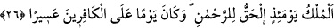

Gökyüzü kubbeli olmakla birlikte göklerden birisi yok olup indikçe yeryüzü o miktarda
genişler. Böylece yeryüzünün çevresi melekler için yeterli olur. Meleklerin ince latîf
varlıklar olduğu sâbittir. Bu sebeple insanların sıkışması gibi onlar arasında bir
sıkışıklığın olması düşünülemez.
26. İşte o gün, gerçek mülk (hükümranlık) çok merhametli olan Allah’ındır.
Kâfirler için de pek çetin bir gündür o.
“İşte o gün, gerçek mülk (hükümranlık) çok merhametli olan Allah’ındır.” İşte o gün
ezici saltanat ve küllî hâkimiyet sûreten ve mânen aslâ zevâli olmayacak şekilde
Allah’ındır. Sürekli olarak Rahmân için sâbit bir saltanattır. Mülkün “gerçek mülk”
şeklinde kayıtlanması kıyâmet gününde mülkün yalnızca Allah’a mahsûs olduğunu ifâde
etmek içindir. Fakat dünyada diğer varlıkların az da olsa görünürde bir tasarrufu ve
saltanatı vardır.
İddiacılar mahşerde
Mâlikiyet dâvâsı güdemezler.
“Kâfirler için de pek çetin bir gündür o.” O gün kâfirler için korkunun şiddetinden
şiddetli ve zor bir gündür. Mü’minlere ise Allah Teâlâ’nın ihsânı ile o gün kolay bir gün
olacaktır. Bir hadiste: “Kıyâmet günü mü’mine dünyada kıldığı bir farz namazdan
daha hafif olacak şekilde kolay olacaktır.”[204] buyurmuştur. Hâsılı kâfirler, dünya
nimetlerine kolayca nâil olduktan sonra cehenneme girip cennetlerden mahrûm
kaldıkları için o günü çok zor ve sıkıntılı göreceklerdir. Îmân, taleb, ciddiyet ve gayret
ehli ise cennet nimetlerine ve Rahmân’a kavuşmaları sebebiyle o günü kolay
bulacaklardır. Çünkü dünyada zorluğa razı olmuşlar, kolayı terk etmişler ve zorlukla
birlikte bir kolaylığın geleceğine kesin olarak inanmışlardı.
Sehl Sa’lûkî’nin karşısına hamam külhanından simsiyah pejmürde elbiseler içinde bir
yahudi çıktı ve şöyle dedi: “Siz dünyayı mü’minin hapishânesi, kâfirin cenneti olarak
görmüyor musunuz?” Sehl: “Açıkça öyle görüyoruz. Sen Allah’ın azâbına dûçar olduğun
zaman burası senin cennetin olacak. Ben de Allah’ın nimetlerine nâil olduğumda burası
benim zindanım olacak.” dedi. Orada bulunanlar onun sözüne hayret ettiler.
Şiblî (r.h.)’a: “Dünyada meşguliyetler, âhirette ise korkular var. O halde kurtuluş ne
zaman?” denildi. O da: “Dünyanın meşguliyetlerini terk et, âhiretin korkularından emin
olursun.” dedi. Ne mutlu dünya talebinden ve arzularından yüz çevirip onlara
aldanmayan ve dünya nimetlerine iltifat etmeyen topluluğa! Çünkü şöyle denilmiştir: